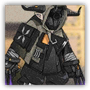
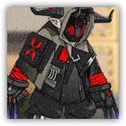

游击队萨卡兹战士 Sarkaz Guerrilla Fighter
近战 物理；精英 萨卡兹

|
 |
爱国者的游击队萨卡兹战士。源石祭坛维持的萨卡兹仪式不会对他们造成伤害，更能强化他们的身体，让他们的攻击变为法术伤害。 |
游击队萨卡兹战士丨Sarkaz Guerrilla Fighter
中型或大型类人（萨卡兹），混乱中立
| AC 16 | 先攻 +0（10） |
| HP 76（9d10+27） | |
| 速度 30 尺 | |
| 调整 | 豁免 | 调整 | 豁免 | 调整 | 豁免 | |||||||||
|---|---|---|---|---|---|---|---|---|---|---|---|---|---|---|
| 力量 | 20 | +4 | +6 | 敏捷 | 11 | +0 | +2 | 体质 | 17 | +3 | +3 | |||
| 智力 | 9 | -1 | -1 | 感知 | 12 | +1 | +1 | 魅力 | 14 | +2 | +2 |
| 技能 运动+6，求生+3，威吓+4 |
| 抗性 毒素，寒冷 |
| 免疫 黯蚀 |
| 感官 黑暗视觉60尺；被动察觉11 |
| 语言 通用语，萨卡兹语 |
| CR 4（1,100 XP；PB +2） |
特质 Traits
魔法抗性 Magic Resistence。萨卡兹为抵抗法术和其它魔法效应而作的豁免检定具有优势。
巫咒重击 Cursed Crit（1/回合）。游击队萨卡兹战士具有临时生命值时，其可以在攻击命中时额外造成7（2d6）力场伤害。
动作 Actions
多重攻击 Multiattack。游击队萨卡兹战士发动两次战爪攻击。
战爪 Battle Claw。近战攻击检定：+7（若持有临时生命值则具有优势），触及5尺。命中：15（3d6+5）挥砍伤害。
反应 Reactions
巫术汲能 Witchcraft Drain。触发：游击队萨卡兹战士受到黯蚀伤害。响应：游击队萨卡兹战士获得等同原本伤害值的临时生命值。
游击队萨卡兹战士组长 Sarkaz Guerrilla Fighter Leader
近战 物理；精英 萨卡兹
|
 |
爱国者的游击队萨卡兹菁英战士。拥有更强破坏力。源石祭坛维持的萨卡兹仪式不会对他们造成伤害，更能强化他们的身体，让他们的攻击变为法术伤害。 |
游击队萨卡兹战士组长丨Sarkaz Guerrilla Fighter Leader
中型或大型类人（萨卡兹），混乱中立
| AC 16 | 先攻 +4（14） |
| HP 133（14d10+56） | |
| 速度 30 尺 | |
| 调整 | 豁免 | 调整 | 豁免 | 调整 | 豁免 | |||||||||
|---|---|---|---|---|---|---|---|---|---|---|---|---|---|---|
| 力量 | 21 | +5 | +8 | 敏捷 | 12 | +1 | +4 | 体质 | 18 | +4 | +4 | |||
| 智力 | 11 | +1 | +1 | 感知 | 13 | +1 | +1 | 魅力 | 16 | +3 | +3 |
| 技能 运动+8，求生+4，威吓+6 |
| 抗性 毒素，寒冷 |
| 免疫 黯蚀 |
| 感官 黑暗视觉60尺；被动察觉11 |
| 语言 通用语，萨卡兹语 |
| CR 6（1,800 XP；PB +3） |
特质 Traits
魔法抗性 Magic Resistence。萨卡兹为抵抗法术和其它魔法效应而作的豁免检定具有优势。
巫咒重击 Cursed Crit（1/回合）。游击队萨卡兹战士具有临时生命值时，其可以在攻击命中时额外造成10（2d6）力场伤害。
动作 Actions
多重攻击 Multiattack。游击队萨卡兹战士组长发动两次战爪攻击。
战爪 Battle Claw。近战攻击检定：+8（若持有临时生命值则具有优势），触及5尺。命中：19（4d6+5）挥砍伤害。
反应 Reactions
巫术汲能 Witchcraft Drain。触发：游击队萨卡兹战士受到黯蚀伤害。响应：游击队萨卡兹战士获得等同原本伤害值的临时生命值。